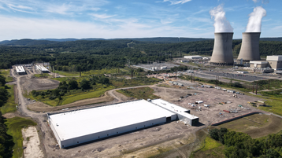
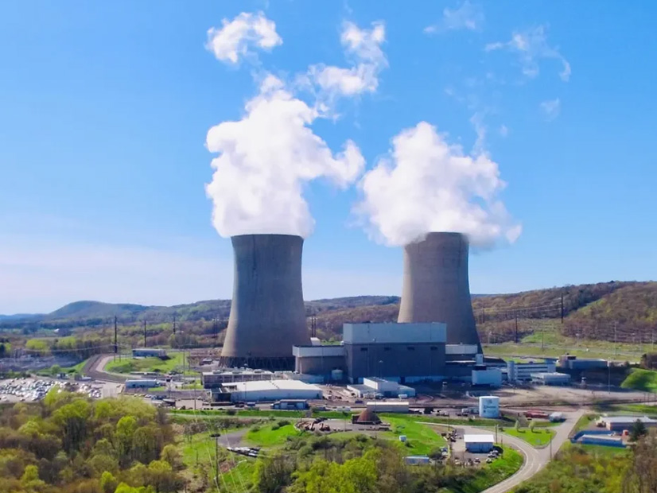

Talen Energy (TLN)
W kontekscie: Naziemny bottleneck energetyczny i sieciowy
Czym jest spółka. Talen Energy to niezależny producent energii (IPP - independent power producer) działający głównie na rynku PJM, czyli w organizacji koordynującej hurtowy obrót energią w 13 stanach USA plus Dystrykt Kolumbii. Sercem floty jest elektrownia jądrowa Susquehanna w Salem Township w Pensylwanii - dwa bloki wrzące (BWR) o łącznej mocy brutto 2,5 GW, z czego Talen kontroluje 90%, czyli ok. 2,2 GW netto (🔵 talenenergy.com/powering-data, bez daty). To szósta co do wielkości elektrownia jądrowa w USA, z licencjami pracy do 2042 (Unit 1) i 2044 (Unit 2) oraz trwającymi pracami nad 20-letnim przedłużeniem. Wokół tego rdzenia spółka prowadzi flotę gazową i węglową w PJM oraz nieliczne aktywa w WECC (Montana).
Dlaczego to ważne dla centrów danych. Talen jest przykładem spółki z istniejącą mocą jądrową atrakcyjną dla DC: dysponuje dużą, działającą, niskoemisyjną mocą baseload w lokalizacji już przyłączonej do sieci, czyli z pominięciem wieloletniej kolejki przyłączeniowej dla zupełnie nowego źródła. Susquehanna pracuje w trybie 24/7 z baseload i wykazuje all-in cost poniżej 24 USD/MWh (2023, cytat z 10-K za 🟠 Utility Dive), do tego korzysta z federalnego Nuclear PTC (kredytu podatkowego za produkcję energii jądrowej) do 15 USD/MWh. Spółka opisuje siebie jako twórcę "world's first 24x7 carbon-free, co-located data center campus" zasilanego z reaktora jądrowego (🔵 talenenergy.com/powering-data). To bezpośrednio rozwija wątek Energia: baseload, powrót do gazu/jądra, SMR dla DC oraz Kolejki przyłączeniowe i ograniczenia sieci.
Ale jest haczyk, o którym łatwo zapomnieć: model "za licznikiem" (behind-the-meter, BTM - bezpośrednie zasilanie obiektu z pominięciem publicznej sieci przesyłowej), w którym energia płynie do hyperscalera z pominięciem sieci publicznej, nie przeszedł przez regulatora. W listopadzie 2024 FERC odrzucił zmianę umowy przyłączeniowej (ISA), która miała pozwolić zwiększyć ko-lokowane obciążenie z 300 MW do 480 MW - z obawy przed przerzucaniem kosztów sieci (do ~140 mln USD/rok) na pozostałych odbiorców (🟠 Utility Dive, Data Center Dynamics). Talen zaskarżył tę decyzję - 28 stycznia 2025 złożył apelację do Sądu Apelacyjnego dla Piątego Okręgu, a równolegle FERC ruszył z szerszym uregulowaniem ko-lokacji (zlecenie dla PJM z 18 grudnia 2025 oraz ANOPR, docket RM26-4) (🟠 Data Center Frontier; 🟠 Utility Dive). Odrzucenie ISA wymusiło restrukturyzację kontraktu na model "przed licznikiem" (front-of-the-meter, FTM), w którym za transmisję odpowiada PPL Electric Utilities, a Talen traci część korzyści BTM (szybsze przyłączenie, brak opłat sieciowych). Wątek grid interconnection i regulacji wybrzmiewa też w Ziemia, lokalizacja, czas budowy (permitting) jako bottleneck.
Dla inwestora: Talen monetyzuje istniejący atut (gotowa moc jądrowa przy hubie DC w Pensylwanii), a nie buduje nowy. Przewaga jest funkcją bottlenecku sieciowego - im dłuższe kolejki przyłączeniowe i trudniejszy dostęp do baseloadu, tym cenniejszy działający reaktor. Ale ścieżka regulacyjna (FERC, model BTM vs FTM) jest tu kluczowym i niedomkniętym ryzykiem.
Materiały spółki
Grafiki z materiałów spółki / IR (prawa właściciela, użycie redakcyjne). Pełny rejestr:
Spolki/assets/_licencje.json.

1. Kampus Cumulus Data przy Susquehanna - wizualizacja. Źródło: media.datacenterdynamics.com; licencja: materiały spółki / IR - prawa właściciela, użycie redakcyjne.

2. Susquehanna Steam Electric Station - zdjecie. Źródło: www.rtoinsider.com; licencja: materiały spółki / IR - prawa właściciela, użycie redakcyjne.
Ekspozycja na temat w liczbach
Skala i dynamika finansowa. Za FY2024 (zakończony 31 grudnia 2024) Talen wykazał przychody operacyjne 2 115 mln USD, w tym 192 mln USD capacity revenues i 1 881 mln USD energy and other revenues (te dwie główne pozycje nie sumują się do 2 115; pozostałe ok. 42 mln USD to inne kategorie przychodu) oraz Adjusted EBITDA (non-GAAP) 770 mln USD i Adjusted Free Cash Flow 283 mln USD (🔵 IR FY2024 earnings release). GAAP Net Income przypisany akcjonariuszom wyniósł 998 mln USD, na co wpłynął m.in. zysk ze sprzedaży kampusu AWS. Za pełny rok 2025 (zakończony 31 grudnia 2025, raport z 26 lutego 2026) Talen wykazał przychody operacyjne 2 581 mln USD (w tym 2 141 mln USD energy and other revenues i 485 mln USD capacity revenues; pozycje nie sumują się dokładnie do 2 581), Adjusted EBITDA 1 035 mln USD (+265 mln USD r/r) i Adjusted FCF 524 mln USD (+241 mln USD r/r), przy generacji 39,9 TWh; zaraportowano przy tym GAAP Net Loss przypisany akcjonariuszom -219 mln USD (🔵 Talen IR/GlobeNewswire, FY2025 earnings release, 26 lutego 2026). Q4 2025 dał Adjusted EBITDA 382 mln USD i Adjusted FCF 292 mln USD (🔵 IR FY2025 earnings release). Najnowszy raportowany kwartał (Q1 2026, zakończony 31 marca 2026, raport z 5 maja 2026) pokazuje dalsze przyspieszenie: przychody operacyjne 1 129 mln USD, Adjusted EBITDA 473 mln USD (Adjusted EBITDA ponad podwojony r/r), Adjusted FCF 350 mln USD (FCF poczwórzony r/r), GAAP Net Income 63 mln USD, przy generacji 15,6 TWh i capacity factorze 55,1% - efekt głównie zamkniętych w Q4 2025 akwizycji Freedom i Guernsey (🔵 Talen IR, Q1 2026 earnings release, 5 maja 2026; 🟠 StockTitan, 5-6 maja 2026). Wcześniejszy kwartał Q3 2025 (zakończony 30 września 2025) pokazał przychody operacyjne 812 mln USD (+24,9% r/r), Adjusted EBITDA 363 mln USD (+57,8% r/r) i Adjusted FCF 223 mln USD (🔵 IR 8-K Q3 2025). Motorem są głównie wyższe capacity revenues z aukcji PJM oraz wyższe energy and other revenues.
Guidance FY2026. Talen potwierdził (w Q1 2026) widełki Adjusted EBITDA 1 750-2 050 mln USD oraz Adjusted FCF 980-1 180 mln USD na 2026; guidance nie obejmuje jeszcze wpływu akwizycji Cornerstone (🔵 Talen IR, Q1 2026 earnings release, 5 maja 2026). Spółka komunikuje też cel Adjusted FCF powyżej 40 USD/akcję do 2028 (🟠 StockTitan, 15 czerwca 2026).
xychart-beta
title "Talen - przychody operacyjne i Adjusted EBITDA (mln USD)"
x-axis ["FY2024 przych.", "FY2024 EBITDA adj.", "FY2025 przych.", "FY2025 EBITDA adj.", "Q1 2026 przych.", "Q1 2026 EBITDA adj."]
y-axis "mln USD" 0 --> 2700
bar [2115, 770, 2581, 1035, 1129, 473]
Rys. - Skala finansowa Talen: lata obrotowe 2024 i 2025 oraz najnowszy kwartał Q1 2026. Dane: 🔵 Talen IR (FY2024 earnings release; FY2025 earnings release z 26 lutego 2026; Q1 2026 earnings release z 5 maja 2026).
Ile z tego to data center? NIE UJAWNIONE wprost. Talen nie wydziela osobnego segmentu "data center", "Cumulus" ani "digital infrastructure" - przychody z kontraktów DC są wtopione w linię "Energy and other revenues" oraz w skonsolidowane Adjusted EBITDA (🔵 10-Q Q3 2025). Spółka raportuje dwa segmenty operacyjne: PJM i Other. Za 9M2025 segment PJM dał 1 760 mln USD przychodów i 689 mln USD Adjusted EBITDA, segment Other tylko 116 mln USD i 24 mln USD (🔵 10-Q Q3 2025, Note 18). PJM to zatem niemal cały biznes.
pie title Struktura Adjusted EBITDA wg segmentow, 9M2025 (mln USD, przed korporacja)
"PJM" : 689
"Other (WECC/Montana)" : 24
Rys. - Segment PJM (z Susquehanna) generuje 96,6% segmentowego Adjusted EBITDA; "Other" jest marginalny. Korporacyjne koszty/eliminacje -60 mln USD ujęto osobno. Dane: 🔵 Talen 10-Q Q3 2025, Note 18.
Proxy na udział DC. Bezpośredni dzisiejszy udział data center w przychodach jest niski - szacunek roboczy poniżej 5-10% (niezweryfikowany; brak osobnego ujawnienia segmentowego, wartość wyprowadzona z poniższych pozycji przychodu). "Digital revenue + Nuclear PTC" spadły w Q3 2025 r/r o 92 mln USD (z czego sam Nuclear PTC to 67 mln USD w Q3 2024), a "Other revenue from customers" za 9M2025 wyniosło 0 mln USD wobec 91 mln USD w 9M2024 - to efekt sprzedaży kampusu Cumulus i tego, że PPA z AWS dopiero się rampuje (🔵 10-Q Q3 2025). Perspektywicznie jednak offtake z AWS ma realny ciężar: ~18 mld USD przez 17 lat to średnio ~1,06 mld USD/rok w całym okresie kontraktu (🟠 Utility Dive; obliczenie orientacyjne). Uwaga: to średnia z całego okresu, a nie run-rate po pełnej rampie - run-rate przy mocy 1 920 MW od ok. 2032 będzie wyższy niż wczesnolatowy, a niższy w fazie rampy, więc średnia nie jest wprost docelowym poziomem rocznym. Orientacyjnie ~1,06 mld USD odpowiada ok. 41% przychodów względem bazy FY2025 (2 581 mln USD) i ok. 50% względem FY2024 (2 115 mln USD). Implikowana cena kontraktu AWS to ok. 68,90 USD/MWh (z ~18 mld USD przy do 1 920 MW przez 17 lat), znacząco powyżej all-in cost Susquehanna ok. 27 USD/MWh w 2025 - to skala marży, jaką PPA wnosi dla Talen (🟠 POWER Magazine, czerwiec 2025; 🟠 EnkiAI). Udział Amazona w całkowitych przychodach Talen na koniec FY2025 pozostaje niski, bo PPA dopiero się rampuje, a precyzyjna miara koncentracji odbiorcy: NIE UJAWNIONE (Talen nie raportuje rozbicia przychodów na pojedynczych klientów).
Uwaga na backlog. Talen nie podaje tradycyjnego backlogu DC. Raportowane "Future Performance Obligations" dotyczą wyłącznie capacity revenues (głównie PJM BRA): Q4 2025 - 163 mln USD, 2026 - 733 mln USD, 2027 - 328 mln USD, 2028+ - 0 mln USD (🔵 10-Q Q3 2025, Note 3). Pozorna sprzeczność z tabelą aukcji (gdzie rok planistyczny 2027/2028 daje ~1 067 mln USD) wynika z różnicy konwencji: FPO ujmuje zakontraktowane zobowiązania w latach kalendarzowych według stanu na datę raportu (30 września 2025), podczas gdy rok planistyczny PJM biegnie od czerwca do maja, a wyniki aukcji BRA 2027/2028 (ogłoszone w grudniu 2025) były po cutoffie tego 10-Q i dlatego nie weszły jeszcze do tabeli FPO. Co istotne, te liczby NIE obejmują długoterminowego PPA z AWS (do 1 920 MW do 2042), który jest ujmowany w "Energy and other revenues" i nie wchodzi do tej tabeli.
Dla inwestora: dzisiejsza ekspozycja na DC jest mała i wręcz malejąca (po sprzedaży Cumulus), ale to obraz przed rampą. Cały ciężar tematu DC w Talen jest w przyszłości - w PPA z AWS, który nie pokazuje się jeszcze ani w przychodach, ani w raportowanych "Future Performance Obligations".
Kluczowe umowy/wdrozenia - co znacza
AWS PPA to dziś flagowy kontrakt - i sedno tezy DC. W czerwcu 2025 Talen rozszerzył umowę z Amazon Web Services na dostawę do 1 920 MW energii jądrowej z Susquehanna do 2042; kontrakt 17-letni, szacowana wartość ~18 mld USD, implikowana cena ok. 68,90 USD/MWh, z rampą 840-1 200 MW do 2029 i 1 680-1 920 MW do 2032 (pełny zakontraktowany wolumen najpóźniej w 2032) (🟠 Utility Dive; 🟠 POWER Magazine, czerwiec 2025; 🟠 DCD). Strukturę potwierdza sama spółka: kontrakt jest w modelu front-of-the-meter, transmisją zajmuje się PPL Electric Utilities - co jest bezpośrednim następstwem odrzucenia BTM ISA przez FERC (🔵 talenenergy.com/powering-data). Amazon ma planować ok. 20 mld USD nakładów na centra danych w Pensylwanii (🟠 Utility Dive).
Wcześniejsza transakcja założycielska - sprzedaż kampusu Cumulus. W marcu 2024 Talen sprzedał AWS kampus data center Cumulus o mocy 960 MW za 650 mln USD (350 mln USD przy zamknięciu + 300 mln USD escrow), na działce 1 200 akrów, oddzielając wcześniejszą kopalnię kryptowalut Nautilus (🔵 IR news release). To zdarzenie jednorazowe - zysk poprawił FY2024, ale się nie powtarza, co tłumaczy spadek "digital revenue" w 2025.
Zabezpieczanie dodatkowej mocy pod duże obciążenia (akwizycje gazowe). Aby zwiększyć flotę pod popyt DC i dużych odbiorców, Talen przejął ok. 2,8 GW CCGT w PJM - Freedom i Guernsey - za 3,8 mld USD gotówki; transakcję zamknięto 25 listopada 2025 (🔵 IR FY2025 earnings release, 26 lutego 2026; 🔵 10-Q Q3 2025, Note 17). Doszła też akwizycja Cornerstone (2 451 MW gazu w PJM: Lawrenceburg 1 120 MW w Indianie, Waterford 875 MW i Darby 456 MW w Ohio) od Energy Capital Partners za 3,45 mld USD (ok. 2,55 mld USD gotówki + ok. 900 mln USD akcjami, tj. 2 399 998 akcji); podpisana 15 stycznia 2026 i zamknięta 15 czerwca 2026 (🔵 Talen IR, 8-K z 15 czerwca 2026; 🟠 StockTitan; 🟠 Utility Dive). Spółka wyceniła Cornerstone na ok. 6,6x 2027E Adjusted EBITDA i wskazuje akrecję Adjusted FCF/akcję ponad 15% rocznie do 2030 (🟠 StockTitan). Osobno działają umowy niezawodnościowe RMR (Reliability-Must-Run) dla Brandon Shores i H.A. Wagner: łącznie 180 mln USD/rok (145 mln + 35 mln) do 31 maja 2029 - utrzymują w ruchu moc w regionie istotnym dla DC (🔵 IR Q1 2025).
| Kontrakt / wydarzenie | Skala | Wartość | Źródło |
|---|---|---|---|
| AWS PPA (czerwiec 2025) | do 1 920 MW, do 2042 | ~18 mld USD (17 lat); ~68,90 USD/MWh | 🟠 Utility Dive / POWER Magazine |
| Sprzedaż kampusu Cumulus (marzec 2024) | 960 MW, 1 200 akrów | 650 mln USD | 🔵 IR news release |
| Akwizycja Freedom + Guernsey (zamkn. 25 lis 2025) | ~2,8 GW CCGT | 3,8 mld USD gotówki | 🔵 IR FY2025 |
| Akwizycja Cornerstone (zamkn. 15 cze 2026) | 2 451 MW gazu | 3,45 mld USD (2,55 mld gotówka + 0,9 mld akcje) | 🔵 IR 8-K / 🟠 StockTitan |
| RMR Brandon Shores + H.A. Wagner | utrzymanie mocy do 2029 | 180 mln USD/rok | 🔵 IR Q1 2025 |
Dla inwestora: Talen dokonał zwrotu od "sprzedaży kampusu DC" (jednorazowa gotówka) do "sprzedaży energii do kampusu DC" (wieloletni strumień PPA). Ten drugi model jest trwalszy, ale uzależniony od jednego hyperscalera i od regulatora, który już raz zablokował preferowaną strukturę.
Pozycja rynkowa i udzialy
Flagowy atut: Susquehanna. Moc brutto 2,5 GW (2 bloki BWR), udział Talen 90% (2,2 GW netto), szósta największa elektrownia jądrowa w USA, licencje do 2042/2044 z pracami nad 20-letnim przedłużeniem. All-in cost poniżej 24 USD/MWh (2023), produkcja ponad 18 TWh przy 90% udziale (2023), plus Nuclear PTC (kredyt podatkowy za produkcję jądrową) do 15 USD/MWh (🔵 talenenergy.com/powering-data; dane kosztowe i produkcyjne za 🟠 Utility Dive jako cytat z 10-K). Łączna produkcja całej floty w FY2024 to 36,3 TWh, z czego 50% to generacja bezemisyjna (🔵 IR FY2024). Uwaga: produkcja Susquehanna ponad 18 TWh dotyczy 2023, a 36,3 TWh całej floty FY2024 - to różne lata, więc zestawienie obu jako udziału jest jedynie orientacyjne.
Udział w rynku DC power: NIE UJAWNIONY. Nie istnieje twarda miara udziału w wąskim rynku "zasilanie DC z reaktora". W wąskiej niszy "bezpośrednie zasilanie DC z reaktora jądrowego" Talen był pierwszym graczem w USA (first-mover). Miarą skali ekspozycji na PJM i rynek capacity (a nie udziału w rynku zasilania DC) są aukcje pojemnościowe PJM, gdzie wolumeny i ceny rosną:
| Aukcja PJM BRA | Wolumen Talen | Cena (USD/MW-dzień) | Przychód pojemnościowy/rok |
|---|---|---|---|
| 2025/2026 | 6 820 MW | 269,92 | ~670 mln USD |
| 2026/2027 | 6 702 MW | 329,17 | ~805 mln USD |
| 2027/2028 | 8 745 MW | 333,44 | ~1 067 mln USD |
(🔵 Talen IR - komunikaty o wynikach aukcji PJM BRA.)
xychart-beta
title "Talen - sprzedana moc w aukcjach pojemnosciowych PJM (MW)"
x-axis ["BRA 2025/2026", "BRA 2026/2027", "BRA 2027/2028"]
y-axis "MW" 0 --> 9000
bar [6820, 6702, 8745]
Rys. - Wolumen mocy sprzedanej przez Talen w kolejnych aukcjach PJM; rosnące ceny (270 -> 333 USD/MW-dzień) podnoszą przychody pojemnościowe. Dane: 🔵 Talen IR.
Flota i moc po Cornerstone. Po zamknięciu Cornerstone (15 czerwca 2026) Talen operuje flotą ok. 15,6 GW (15 559 MW pro forma), w tym ok. 2,2 GW jądra (Susquehanna, udział Talen) oraz nowo dodane 2 451 MW gazu w zachodnim PJM; wcześniej Freedom i Guernsey dodały ok. 2,8 GW gazu (zamknięcie 25 listopada 2025) (🔵 Talen IR, 8-K z 15 czerwca 2026; 🟠 StockTitan).
W całym PJM (szczytowe zapotrzebowanie prognozowane na ~157 GW dla roku 2026/2027) udział Talen w aukcjach capacity to kilka procent (orientacyjnie ok. 8,7 GW zakontraktowanych w BRA 2027/2028 wobec ~135-150 GW całkowitej cleared capacity, czyli rząd 6%; udział liczony względem cleared capacity, nie zainstalowanej mocy Talen). Bariery wejścia, które chronią pozycję: licencje NRC i działający reaktor z horyzontem do lat 2040+, gotowa infrastruktura przyłączeniowa i woda chłodząca, lokalizacja w PJM (Pensylwania jako hub DC), know-how negocjacji BTM/FTM z FERC/PJM oraz skala floty gazowej (~15,6 GW łącznej mocy po zamknięciu akwizycji), pozwalająca oferować moc "grid-supported".
Dla inwestora: pozycja Talen w temacie DC opiera się na unikatowym aktywie (Susquehanna) i statusie first-movera, a nie na udziale rynkowym mierzalnym liczbą. Bieżąca skala finansowa jest zaś napędzana głównie przez rosnące ceny capacity w PJM - to dwa różne źródła wartości.
Mechanika konkurencji - na osiach
Konkurencja toczy się o to samo: zakontraktować hyperscalera na wieloletni baseload, najlepiej jądrowy lub gazowy. Talen ma jednego klienta (Amazon) i jeden flagowy reaktor; więksi rywale mają szerszą flotę i więcej umów.
- Constellation Energy (CEG) - największy operator jądrowy w USA (~22 GW jądra przed Calpine, ~55-60 GW total po Calpine). Umowy: Microsoft (restart Three Mile Island / Crane CEC, 835 MW, 20 lat) oraz Meta (Clinton, 1 121 MW + 30 MW uprate, 20 lat). Oś: skala jądrowa, relacje z hyperscalerami, capacity factor floty >94% (🟠 Yahoo Finance, USeluminix).
- Vistra Corp (VST) - portfel hybrydowy ~41-44 GW total, w tym ~6,4 GW jądra; retail z 5 mln klientów. Umowy: Meta (Perry/Davis-Besse/Beaver Valley, 2 176 MW + 433 MW uprates = 2,6 GW, 20 lat) i AWS (Comanche Peak do 1 200 MW). Oś: mix gaz+jądro, retail, szybkość (🟠 USeluminix, POWER Magazine).
- NRG Energy (NRG) - ~25 GW total, głównie gaz, po akwizycji od LS Power. 445 MW zakontraktowane + pipeline 6,4 GW gazu dla DC. Oś: szybkość dostawy mocy gazowej, "bring-your-own-power" w ERCOT/PJM (🟠 USeluminix).
Tło dopełniają PSEG (~3,8 GW jądra, regulowane plany DC w NJ) i NextEra (Google: restart Duane Arnold, ~600-630 MW), a także deweloperzy SMR (TerraPower, Oklo, X-energy, NuScale) - na razie bez istotnych przychodów.
| Oś konkurencji | Talen | Constellation | Vistra | NRG |
|---|---|---|---|---|
| Cena / koszt | jądro all-in <24 USD/MWh | skala obniża koszt; restart TMI ~1,6 mld USD | gaz tańszy krótkoterminowo + jądro z uprate | gaz, szybka dostawa |
| Niezawodność | Susquehanna - wysoki capacity factor, 24/7 baseload (brak ujawnionej metryki "top-decile") | capacity factor floty >94% | mieszany: gaz szczytowy + jądro baseload | gaz, szybka dyspozycyjność |
| Heritage / lokalizacja | pierwszy ko-lokowany DC+jądro w USA | największy operator jądrowy USA | 4 reaktory w PJM, retail | silna pozycja ERCOT/PJM |
| Time-to-market | Susquehanna już działa; pełna rampa do 2032 | TMI restart 2027-2028, Clinton 2027 | Perry/Davis-Besse od 2026 | gaz: najkrótszy lead time |
Uwaga: poza all-in cost Talena (<24 USD/MWh) komórki kosztu i szybkości to oceny jakościowe i orientacyjne, bez ujednoliconych widełek cen i lead time'ów - traktować jako kierunkowe, nie jako twarde porównanie liczbowe.
Dla inwestora: Talen wygrywa unikatowością i statusem first-movera w niszy jądro+DC, ale konkurenci o większej skali (offtake z Microsoftem, Metą, AWS na wielu reaktorach) mogą przebijać ceny i oferować większy wolumen. Mechanizm presji: dłuższe PPA mogą być zawierane po niższych cenach, a model jądro+DC przestaje być wyjątkowy w miarę upowszechniania.
Koncentracja odbiorcow i ryzyka z mechanizmem
Koncentracja na jednym kliencie DC. Amazon/AWS jest de facto jedynym dużym klientem data center Talen. Przyszłe przepływy z tematu DC są więc silnie skupione na jednym offtake. Mechanizm: utrata Amazona, opóźnienia w budowie DC, spowolnienie AI/ML lub zmiana struktury umowy mogłyby obniżyć oczekiwane ~18 mld USD z kontraktu PPA (🟠 Utility Dive). Brak dywersyfikacji klientów DC zwiększa wrażliwość całej tezy.
Ryzyko regulacyjne (FERC/PJM) - już zmaterializowane raz. 1 listopada 2024 FERC odrzucił BTM ISA, blokując rozszerzenie ko-lokowanego obciążenia z 300 MW do 480 MW; powodem była obawa o przerzucanie kosztów sieci (do ~140 mln USD/rok) na innych odbiorców oraz kwestie niezawodności (🟠 Utility Dive, DCD, Davis Graham). Po odrzuceniu wniosku o rehearing Talen zaskarżył decyzję - 28 stycznia 2025 złożył apelację do Sądu Apelacyjnego dla Piątego Okręgu (Fifth Circuit Court of Appeals) (🟠 Data Center Frontier; 🟠 ANS). Równolegle FERC ruszył z ogólnokrajowym uregulowaniem ko-lokacji: 18 grudnia 2025 wydał zlecenie nakazujące PJM stworzyć nowe zasady dla ko-lokowanych obciążeń (trzy nowe usługi przesyłowe: interim non-firm, firm contract demand, non-firm contract demand) oraz zrewidować reguły generacji za licznikiem; PJM ma 60 dni na propozycje w trybie paper hearing, a do 19 stycznia 2026 złożyć raport o propozycjach Critical Issue Fast Path (CIFP) (🟠 Utility Dive, 18-19 grudnia 2025; 🟠 Akerman). Tłem jest ANOPR ws. przyłączania dużych obciążeń (>20 MW) do sieci międzystanowej, zainicjowany na wniosek Sekretarza Energii z 23 października 2025 (docket RM26-4) (🟠 Utility Dive / FERC; 🟠 Womble Bond Dickinson). Mechanizm: zakwestionowanie modelu BTM wymusiło przejście na FTM, co wymaga rozbudowy transmisji i odbiera część korzyści (szybkie przyłączenie, brak opłat sieciowych). Wpływ na rampę AWS PPA: kontrakt już działa w modelu FTM przez PPL Electric Utilities, więc dostawy nie są zależne od rozstrzygnięcia apelacji BTM, ale ostateczny kształt reguł CIFP/ANOPR pozostaje czynnikiem ryzyka dla tempa rozbudowy ko-lokowanego obciążenia - kontekst rozwija Kolejki przyłączeniowe i ograniczenia sieci.
Ryzyko cyklu technologicznego (SMR i uprates). 19 marca 2026 Talen i X-energy podpisały list intencyjny (LOI) na ocenę wdrożenia reaktorów SMR Xe-100 w Pensylwanii i szerzej w PJM - obejmuje studia wykonalności, ocenę lokalizacji oraz potencjalną konwersję sites kopalnianych/gazowych na jądro; to wciąż wczesny etap, bez ujawnionych twardych terminów ani celów MW (🟠 World Nuclear News / NucNet, marzec 2026). Talen wraz z Amazonem deklaruje też zamiar rozbudowy mocy Susquehanna przez uprate'y, z intencją dodania net-new energy do PJM, ale konkretny zakres MW i harmonogram uprate'ów: NIE UJAWNIONE (uprate wymaga zgód NRC) (🟠 World Nuclear News, 2026). SMR są wczesnie w komercjalizacji (pierwsze wdrożenia w USA ~2030-2035). Mechanizm: opóźnienia lub wzrost kosztów uprates/SMR mogą opóźnić pełną rampę 1 920 MW do 2032+.
Ryzyko rynku energii i hedgingu. Talen to w dużej mierze merchant generator w PJM - ceny energii i capacity są zmienne. Hedging: 100% oczekiwanej generacji na 2025, ~60% na 2026, ~25-33% na 2027 (🔵 dane spółki z materiałów IR). Wysokie ceny aukcji (269-333 USD/MW-dzień) są korzystne, ale mogą się odwrócić. Mechanizm: spadek cen PJM obniżyłby EBITDA segmentu PJM, w którym dziś jest 96,6% segmentowego Adjusted EBITDA (9M2025).
Ryzyko bilansu i rozwodnienia (M&A). Akwizycje Freedom/Guernsey (3,8 mld USD gotówki, zamknięte 25 listopada 2025) i Cornerstone (3,45 mld USD, w tym ok. 2,55 mld USD gotówki i ok. 900 mln USD akcjami - 2 399 998 akcji - podpisana 15 stycznia 2026, zamknięta 15 czerwca 2026) finansowane są m.in. emisją obligacji (🔵 IR FY2025; 🟠 StockTitan; 🟠 Utility Dive). 17 kwietnia 2026 Talen Energy Supply wycenił 4 mld USD senior notes w private placement: 1,5 mld USD obligacji 6,125% z terminem 2031 i 2,5 mld USD obligacji 6,375% z terminem 2033 (zamknięcie ~29 kwietnia 2026); wpływy przeznaczono na sfinansowanie Cornerstone (2 451 MW) oraz pełny wykup obligacji 8,625% senior secured due 2030 (1,2 mld USD) - co obniża roczne koszty odsetkowe o ponad 40 mln USD i dodaje blisko 1 USD/akcję do FCF (🟠 StockTitan / TipRanks, 17 kwietnia 2026). Net leverage ratio wynosił 3,1x na 31 marca 2026 (na bazie forecastu 2026, z wyłączeniem długu Cornerstone), przy targecie net leverage <3,5x net debt/Adjusted EBITDA i deklaracji osiągnięcia <3,5x do końca 2026 (🟠 StockTitan; 🔵 IR FY2025/Q1 2026). Total available liquidity to ~2,1 mld USD na 20 lutego 2026 (1,2 mld USD gotówki + 0,9 mld USD dostępnego revolvera) (🔵 IR FY2025 earnings release). Liczba akcji spadła z ~59 mln (koniec 2023) do ~45,7 mln (Q3 2025) dzięki buybackom, a emisja ~2,4 mln akcji na Cornerstone częściowo to odwraca. Mechanizm: rosnący dług i rozwodnienie obciążają bilans; realizacja targetu leverage zależy od EBITDA.
Ryzyko dostaw paliwa i ESG. Paliwo jądrowe jest w pełni skontraktowane do 2027, prawie w pełni do 2028 i >70% do 2029 (🔵 FY2024 earnings release); koncentracja światowych dostawców uranu i usług konwersji (Rosja, Kazachstan) tworzy ryzyko łańcucha dostaw. Pozostałe aktywa węglowe (Brandon Shores, H.A. Wagner, Brunner Island, Colstrip) podlegają regulacjom EPA, z odpowiednimi ARO - przyspieszone wycofywanie węgla mogłoby obniżyć przepływy z aktywów konwencjonalnych.
Dla inwestora: profil ryzyka Talen jest skoncentrowany w dwóch punktach - jeden klient DC (Amazon) i jeden regulator (FERC), który już raz zablokował preferowaną strukturę. Do tego dochodzi typowe dla merchant IPP ryzyko cen energii oraz lewarowany bilans po fali akwizycji gazowych.
Powiązane spółki
Inne notowane spółki z raportu dzielące z tą firmą co najmniej jeden wątek tematyczny (wspólny rynek, technologia lub łańcuch wartości).
- Bloom Energy Corporation (BE) - Ogniwa paliwowe SOFC dla centrów danych
Wspólne wątki: Naziemny bottleneck. - Constellation Energy Corporation (CEG) - Największy operator floty jądrowej w USA (PPA z hyperskalerami)
Wspólne wątki: Naziemny bottleneck. - Eaton Corporation plc (ETN) - Zasilanie DC (UPS, switchgear) + chłodzenie (Boyd Thermal)
Wspólne wątki: Naziemny bottleneck. - GE Vernova Inc. (GEV) - Turbiny gazowe i infrastruktura sieciowa dla DC
Wspólne wątki: Naziemny bottleneck. - Oklo Inc. (OKLO) - Mikroreaktory (SMR/fission) na potrzeby DC
Wspólne wątki: Naziemny bottleneck. - Schneider Electric SE (SU) - Zasilanie i chłodzenie DC (EcoStruxure, Motivair)
Wspólne wątki: Naziemny bottleneck. - Siemens Energy AG (ENR) - Turbiny gazowe i technologie sieciowe (EU)
Wspólne wątki: Naziemny bottleneck. - Vertiv Holdings Co (VRT) - Zasilanie i precyzyjne/cieczowe chłodzenie DC
Wspólne wątki: Naziemny bottleneck.
Slowniczek
Część terminów technicznych linkowana jest do wspólnego słownika vaultu; nie wszystkie skróty są jednak rozwinięte przy pierwszym użyciu (np. PJM, FERC, ISA, WECC, NRC, CCGT, BRA, GAAP, EBITDA, FCF, ARO - ich rozwinięcie to kierunek do uzupełnienia). Najważniejsze lokalne pojęcia:
- baseload - moc podstawowa, dostarczana w sposób ciągły 24/7; jądro Susquehanna to klasyczne źródło baseload.
- PPA - długoterminowa umowa kupna energii (zwykle 10-20 lat) po ustalonych warunkach; tu PPA z AWS do 2042.
- offtake - zobowiązanie odbioru ustalonego wolumenu energii przez klienta; sednem tezy DC Talen jest offtake od jednego hyperscalera.
- hyperscaler - gigant chmury obliczeniowej (tu Amazon/AWS).
- behind-the-meter (BTM) / front-of-the-meter (FTM) - dwa modele przyłączenia: BTM to zasilanie obiektu bezpośrednio od źródła, z pominięciem pełnego przyłącza i opłat sieciowych; FTM to dostawa przez publiczną sieć przesyłową (tu transmisją zajmuje się PPL Electric Utilities). To modele przyłączenia, a nie typ odbiorcy.
- grid interconnection - przyłączenie do sieci przesyłowej; kolejki i ograniczenia tworzą naziemny bottleneck.
- SMR - mały modułowy reaktor (we wczesnej komercjalizacji).
- Nuclear PTC - federalny kredyt podatkowy za produkcję energii jądrowej (do 15 USD/MWh); to instrument podatkowy, nie technologia, i nie należy go mylić z SMR.
- capex - nakłady inwestycyjne; tu m.in. akwizycje gazowe i potencjalne uprates/SMR.
- backlog - portfel zakontraktowanych zobowiązań; Talen raportuje tylko "Future Performance Obligations" dla capacity (bez AWS PPA).
Jednostka ceny capacity w aukcjach PJM to USD/MW-dzień (cena za 1 MW zakontraktowanej mocy za każdą dobę roku planistycznego). Pozostałe pojęcia specyficzne dla Talen (PJM, BTM/FTM, FERC, ISA, RMR, capacity factor, spark spread) wyjaśniono przy pierwszym użyciu w treści notatki.
Linkują tutaj
10 powiązanych notatek
- Mapa raportu Orbitalne / kosmiczne centra danych
- Sekcja Naziemny bottleneck energetyczny i sieciowy
- Spółka Bloom Energy (BE)
- Spółka Constellation Energy (CEG)
- Spółka Eaton (ETN)
- Spółka GE Vernova (GEV)
- Spółka Oklo (OKLO)
- Spółka Schneider Electric (SU)
- Spółka Siemens Energy (ENR)
- Spółka Vertiv (VRT)